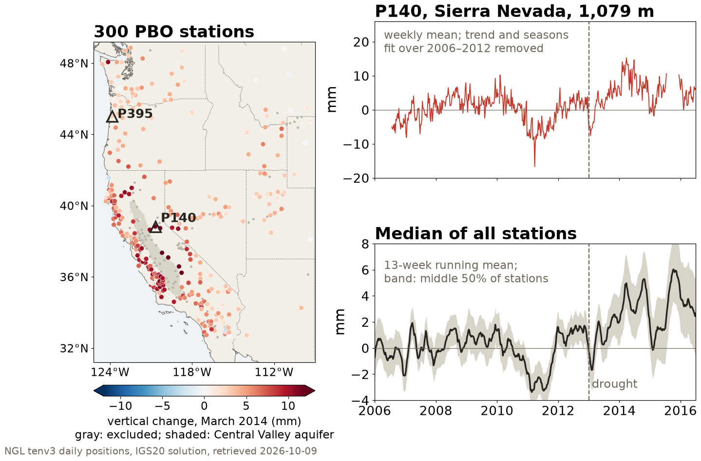
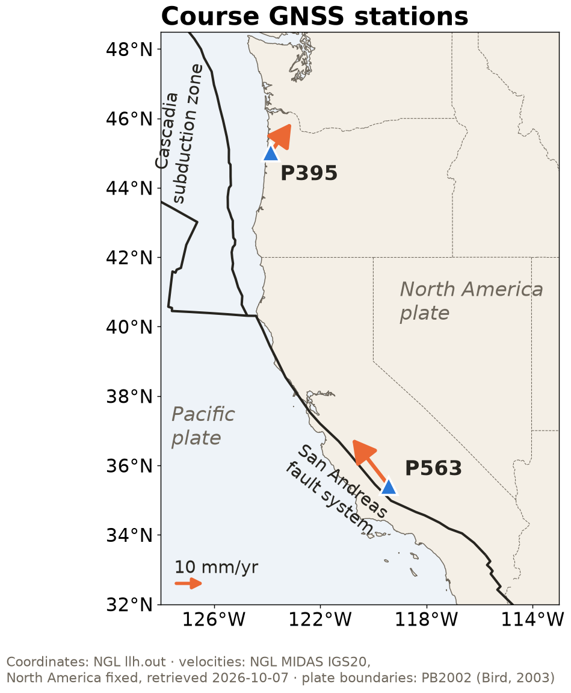
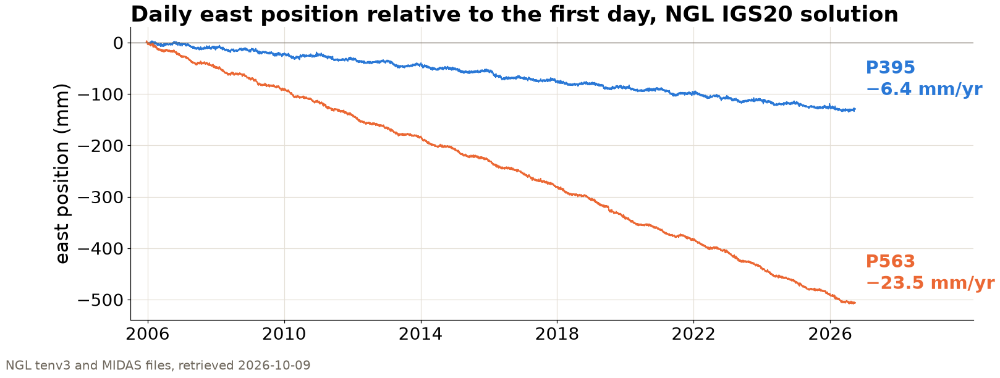

Session 4 · Wed Oct 7 · Book sections 2.1–2.2 & 1.6–1.7
🛰️
Every geoscience project ends up handling at least two kinds of data.
Which streams are yours, and what do they deserve to be stored in?
Reading: 2.1 Data definitions · 2.2 Data formats · 1.6 Data gallery · 1.7 GNSS data
Exchange repository URLs with another pair.
pixi run smoke)The first obstacle a peer meets is evidence about documentation, environment, access, or computational assumptions.
Data curation: selecting, documenting, checking, versioning, and licensing data so that someone else can find, understand, and reuse it. It is the rubric’s data and provenance dimension, and the data rules in your AGENTS.md.
| Curation question | Book | Session |
|---|---|---|
| What is this dataset, where did it come from, and under what license? | 1.6–1.7, 2.1 | today |
| Does the stored form keep its meaning: types, units, metadata? | 2.2 | today |
| Does the table record what happened: missing values, types, joins? | 2.3–2.4 | Fri Oct 9 |
| Are arrays and irregular samples on a consistent time base? | 2.5–2.6 | Mon Oct 12 |
| What do its distributions and spectra show? | 2.7–2.8 | Wed Oct 14 |
| Are gaps, drift, and timing errors repaired, and the repairs recorded? | 2.9 | Fri Oct 16 |
| Which features carry the signal, checked against synthetic truth? | 2.10–2.12 | Mon Oct 19 – Wed Oct 21 |
| Is it AI-ready, with a data card another team can audit? | 2.13, 2.20 | Wed Oct 21 |
Chapter 2 is one curation workflow; each session answers one of these questions for your project data.
📍 In-situ sensor 🪨 Solid Earth 💧 Land water 📐 Geodesy 💧 Hydrology & land-surface modeling
GNSS stations built to measure plate motion rose by a median of 5 mm, and by up to 15 mm in California’s mountains, as the 2013–2014 drought removed about 240 Gt of water.
Borsa, Agnew & Cayan (2014). Science, 345, 1587–1590.
One data sample is one station-day (NGL file P140.tenv3)
| site | YYMMMDD | yyyy.yyyy | u0 (m) | up (m) | ant (m) | sig_u (m) |
|---|---|---|---|---|---|---|
| P140 | 13MAR14 | 2013.1992 | 1079 | 0.215989 | 0.0083 | 0.003620 |
| P140 | 13MAR15 | 2013.2019 | 1079 | 0.216928 | 0.0083 | 0.003592 |
| P140 | 14MAR14 | 2014.1985 | 1079 | 0.228624 | 0.0083 | 0.005518 |
| P140 | 14MAR15 | 2014.2012 | 1079 | 0.226236 | 0.0083 | 0.005562 |
Dates appear as a two-digit-year code and as a decimal year; height is split into whole meters (u0) and the rest (up). March median of up: 0.2150 m in 2013, 0.2285 m in 2014.

NGL positions today, 300 stations: median rise 4.6 mm by March 2014; the paper found 5 mm at 771.
30 days
One month of continuous records from 62 California stations, recorded for earthquake monitoring and kept in open archives, gave surface-wave maps from ambient noise.
Shapiro, N. M., Campillo, M., Stehly, L., & Ritzwoller, M. H. (2005). High-resolution surface-wave tomography from ambient seismic noise. Science, 307, 1615–1618.
> 3 PB
CMIP5 output from about 20 modeling groups, expected to exceed 3 PB, is written in one common format, so one analysis can read every model.
Taylor, K. E., Stouffer, R. J., & Meehl, G. A. (2012). An overview of CMIP5 and the experiment design. Bulletin of the American Meteorological Society, 93, 485–498.
17,000
NGL collects GNSS data from more than 130 archives, processes every station the same way, and publishes the positions as plain text files.
Blewitt, G., Hammond, W. C., & Kreemer, C. (2018). Harnessing the GPS data explosion for interdisciplinary science. Eos, 99, doi:10.1029/2018EO104623.
19.6%
Spreadsheet defaults turned gene names into dates in 704 of 3,597 genomics papers with gene lists in Excel supplements.
Ziemann, M., Eren, Y., & El-Osta, A. (2016). Gene name errors are widespread in the scientific literature. Genome Biology, 17, 177.
Continuous seismic archives and a common climate-model format made new analyses possible; a spreadsheet default altered gene lists in 19.6% of the genomics papers screened.
| Stream | Geoscience examples | Shape | Typical labels |
|---|---|---|---|
| Regular high-rate series | 100 Hz seismograms, hourly tide gauges, daily GNSS | 1D, clocked by the instrument | 📍 In-situ sensor 📈 Seismology 📐 Geodesy |
| Gridded fields | climate rasters, satellite imagery, model output | 2D–4D arrays over region and time | 🛰️ Satellite & airborne 🖥️ Model & simulation 🌡️ Atmospheric & climate science |
| Irregular sparse points | multi-well networks, field campaigns | samples wherever access allowed | 📍 In-situ sensor 💧 Land water 💧 Hydrology & land-surface modeling |
Chapter 2 gives each stream equal time, because most projects combine at least two of them.
A grid whose position encodes time and location belongs in an array; one record per observation, with mixed types, belongs in a data frame.
🖥️ Model & simulation 🌤️ Atmosphere 🌡️ Atmospheric & climate science
133 kB as CSV: every number spelled out in text
33 kB as Parquet: the same table, typed and compressed
One 40 × 80 temperature-anomaly field, 3,200 grid cells; synthetic (mlgeo_synth), measured in the executed 2.2 notebook.
CSV writes each value as text characters; Parquet stores typed 8-byte numbers by column and compresses them, four times smaller here.
| Format | Built for | Same field on disk |
|---|---|---|
| CSV | small tables, human-readable anywhere | 133.0 kB |
| Parquet | large tables: columnar, typed, compressed | 33.0 kB |
| netCDF / HDF5 | self-describing arrays: data + units + coordinates in one file | 33.9 kB |
| Zarr | chunked arrays: parallel, partial reads from cloud storage | 29.9 kB |
Parquet, netCDF and Zarr store this field in 30 to 34 kB; netCDF and Zarr also keep units and coordinates, and Zarr splits the array into chunks read separately.

📍 In-situ sensor 🪨 Solid Earth 📐 Geodesy
P395, Oregon Coast Range, above the Cascadia subduction zone: 12.7 mm/yr to the northeast; vertical +0.2 ± 0.4 mm/yr, not resolved.
P563, southern San Joaquin Valley, California, in the Pacific–North America plate boundary zone: 18.6 mm/yr to the northwest; subsides at 7.2 ± 0.5 mm/yr.
Horizontal rates relative to stable North America (arrows). NGL MIDAS, IGS20 solution, retrieved 2026-10-07.
Both stations record plate-boundary motion; P563 also subsides 7.2 mm/yr above a pumped aquifer.
📍 In-situ sensor 🪨 Solid Earth 📐 Geodesy

7,496 daily positions at P395 and 7,555 at P563; in the IGS20 frame they move east at −6.4 and −23.5 mm/yr (NGL MIDAS).
Each run records the checksum of the exact file it read; P395.tenv3 last changed on 4 October 2026, so a copy from September is a different file.
| Stream | Today’s example | Container | Formats that earn it |
|---|---|---|---|
| Regular high-rate series | P395 daily positions (real, NGL) 📍 In-situ sensor 🪨 Solid Earth 📐 Geodesy | time-indexed table / 1D array | CSV small · Parquet, HDF5 at scale |
| Gridded fields | temperature-anomaly field (synthetic, mlgeo_synth) 🖥️ Model & simulation 🌤️ Atmosphere 🌡️ Atmospheric & climate science | labeled array | netCDF local · Zarr cloud |
| Irregular sparse points | Cascade volcano locations 🗂️ Catalog & compiled product 🪨 Solid Earth 🌋 Volcanology | table + geometry | GeoJSON · GeoParquet |
The first section of a project data card names each stream, its container, and its file format.
pixi run jupyter lab → 2.2_data_formats_rendered.ipynb1.7_get_geodetic_gnss.ipynb: download P395 with pooch, record the SHA256 your run printsFriday: cleaning tabular data (2.3–2.4) · Ch 1 quiz closes Thu Oct 8 · HW1 due Mon Oct 12
ESS 469/569 · Machine Learning in the Geosciences · Autumn 2026